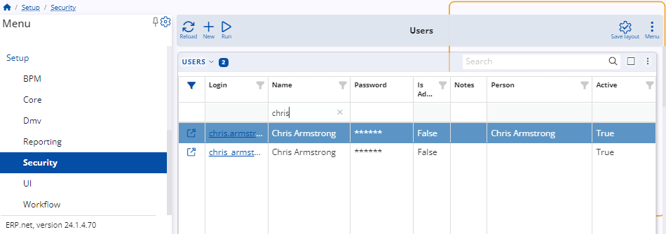

Setup a new user account
To initiate the setup of a new user account, the individual must first create the account, after which an administrator can configure it accordingly.
Create a new account as a user
To create an account, the user should click on Create new local account in the login menu of the ERP.net client center.
Next, they should fill out a form with their information and proceed to create the account.

Setup users account
After a customer of your client has created an account, as an administrator, you need to configure several settings for the new account.
To proceed, navigate to Users within the Security section of the Setup module.
Upon opening the Users navigator, utilize the filter row to locate the new account by its name.

Access the account and click on the Edit button located at the top left corner of the table.
To add a person for the user, you can either click on the Person field and open the menu from the three-dotted button, or simply right-click on the field.
Select the Create new option, which will redirect you to a new window where you can create a new person.

Create a new person
Within this form, there are three critical fields that necessitate completion. You must enter the user's first and last name and select the parent party from the dropdown menu.
After completing these steps, click on Save and reload to finalize the creation.

Check if the parent party is a customer
To open the parent party, click on it within the form. Afterward, locate the Customers panel.
If it's not visible, you can add it by accessing the Related data menu within the customize form option.
In the Customers panel, you should verify if two columns are filled. The Enterprise Company, which should be your company, and the Serviced By Enterprise Company Location.

If they are empty, you'll need to create a new project where you can fill in these fields.

Note
If any of these settings are missing, an error exception code from CC002 to CC007 will be displayed depending on what's missing.
Note
The screenshots taken for this article are from v24 of the platform.